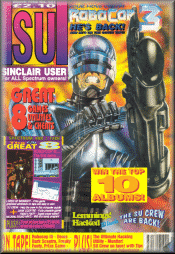

|

Issue 121
March 1992
Editor
Garth Sumpter
Design
Yvette Nichols
Software editor
Big Al "Bagels" Dykes
Girlie tipster
Hannah Smith
Additional design
Jane Davies
SU Crew
John Cook
Pete Gerrard
Phillip Fisch
Graham Mason
Matthew Denton
Ad manager
Tina Zanelli
Ad production
Emma Ward
Marketing man
Mark Swallow
Marketing women
Sarah Ewing
Sarah Hilliard
Publisher
Graham Taylor
Managing Director
Terry Pratt
|
|
SOFTWARE
|
| BIG NOSE'S AMERICAN ADVENTURE | Code Masters |
| Codemaster's recipe for success cooks another winner! |
| BISMARCK | Summit |
| Achtung, achtung! Das ist ein ship blasting strategy game. |
| DOUBLE DARE | Alternative |
| The game of the TV show. Pit your wits and your general knowledge. |
| GAME OVER 2 | Summit |
| Ancient game format that actually delivers surprisingly good action. |
| G-LOC | US Gold |
| US Gold's conversion of the amazing coin-op! |
| ITALIA 90 - WORLD CUP SOCCER | Mastertronic |
| Relive the thrills and spills of the World Cup whilst playing in slow motion. |
| IVAN "IRONMAN" STEWART'S SUPER OFF ROAD RACER | Mastertronic |
| Best Budget and SU Gold award winner, Off Road is a real champion. |
| KID'S PACK | Alternative |
| Popeye, Postman Pat, Sooty and Sweep, Wombles and Count Duckula. Quack! |
| MIDNIGHT RESISTANCE | Hit Squad |
| Ocean are putting the big guns out on the Hit Squad label with this great release |
| MONTY PYTHON'S FLYING CIRCUS | Mastertronic |
| More entertaining than a hovercraft full of middle class comedians ... |
| MULTIMIXX 4 | Kixx |
| All the 2D Gauntlets on one compilation, along with the Deeper Dungeons add-on |
| NEIGHBOURS | Impulze |
| It's the game of the TV series of the book of the movie of the multi coloured coat. |
| NINJA COLLECTION | Ocean |
| Dragon Ninja, Shadow Warriors and Double Dragon 1 join forces for the fight! |
| RAINBOW ISLANDS | Hit Squad |
| Yes, it was out on the Rainbow Collection but now it's budget in its own right |
| SOCCER STARS | Empire |
| All playing together; Gazza2, Microprose Football, Emlyn Hughes and Kick Off. |
| SPACE CRUSADE | Gremlin |
| Based on the board game and an SU Gold this issue. It's out of this world! |
| SUPER SEYMOUR | Code Masters |
| Codemaster's Hollywood hero is back! |
| THE LAST COMMANDO | Alternative |
| Archaic arcade shoot-em-up taking you over three planets |
| THE SHOE PEOPLE | First Class/Gremlin |
| Gremlin's first attempt at educational software is top of the class! |
| TNT2 | Domark |
| Domark's follow up to their hit TNT compilation. |
| 3D POOL | Kixx |
| 4 GAME PACK | Atlantis |
|
|
GREAT EIGHT
|
|
What a corker! We've got the world exclusive ROBOCOP 3 demo, the amazing full games DARK SCEPTRE, FREAKY FOOTY and the prize game LORDS OF MIDNIGHT. We've also got a clever hacking utility called MONITOR, the SU Crew VISUAL TEST, 18 game cheats with TIPS AMAZING and Graham Mason's very own load-in pokes with POKEMANIA!
|
|
FEATURES
|
|
Hacking Squad
The Hacking Squad has been infested this week with rodents. And whilst our girlie tipster, Hannah Smith, scaled the office walls using her nails and three cans of hairspray, the rest of us wrote out the megatips to all 38 levels of LEMMINGS.
Win The Top 10 Albums
A chance to win the top 10 albums from those wild thangs at the HIT SQUAD. Over 90 prizes are on offer so no one can afford to miss it.
Robocop 3 Preview
All the very latest on OCEAN'S (and latest, possibly greatest) game of the film ROBOCOP 3.
|
|
SU CREW
|
|
Garth Sumpter
Still a little stroppy after being frazzed by an alien particle accelerator, Garth is finally back at the helm of SU again. Will he remain this time or is he just coasting along waiting for the call of the Space Trackers? Who knows? One things for sure. Wherever he ends up, it's bound to take that look off his face. |
|
|
Alan Dykes
Since his cloning as S.C. Headrush, Big Al has done everything to avoid excitement. This has curtailed his habit of putting exotic fillings into his bagels and has even made him spend most of his time with eyes closed. This has made him feel far more relaxed but we wish he'd not snore so loudly when the boss is about. |
|
|
Tina Zanelli
The new advertising manager of SU got off to a bad start. She managed to take over from ex-manager Jerry Hall just in time to get sucked off into the hold of an alien space ship and be replaced for two months by a T.1.N.A. sales robot. But now she's back and just bouncing about her new position. |
 |
|
Yvette Nichols
Despite tons of fan mail asking her to bare all in a full-size poster, Yvette has forgone the dubious pleasure of being a pin-up on the planet Rictus 7 and has returned to the relative safety of her Macintosh. Now she's back, all she has to do is try to understand how to use it. |
|
|
Matthew Denton
Child prodigy and superstar Matthew came to SU as a work experience with exactly the wrong attitude for Garth. He actually wanted to work and poor Garth was worn to a frazzle just finding him work to do. For having worn Garth to within a hippy-head hairs breadth of exhaustion, Matthew has been awarded "Work Experience Bod of the Year" and he can come for a return match as soon as Garth is completely recovered. |
|
|
|
|
Colour by
Proprint
Printed by
Kingfisher Web
© Copyright 1992
Emap Images
No part of this magazine may be reproduced, stored in an electronic retrieval system or used to wrap your chips in without the consent of the Publisher. (If you offer him a chip he'll think about it though.) And on behalf of the SU Crew we'd just like to say that it's great to be back on Earth. Even with wars, famine, disease and misery it's a better place than some of the deep space cruisers that we've been playing on for the last two months.
|
{kind=link}